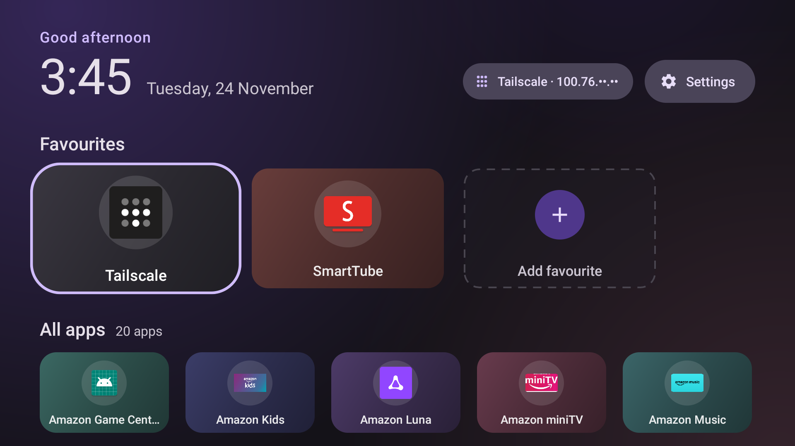
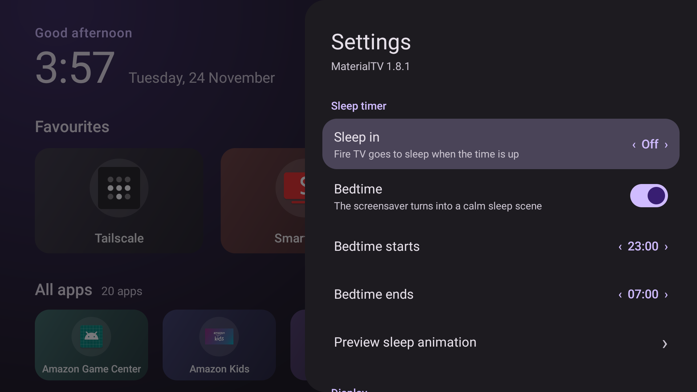
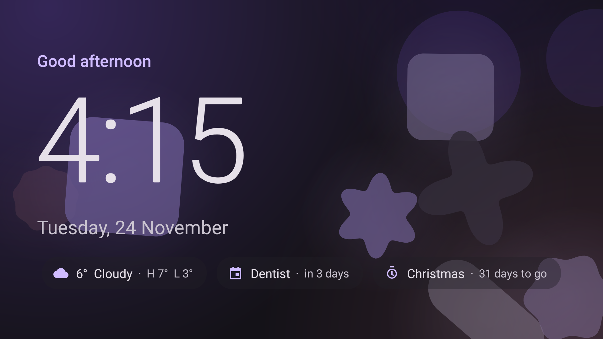
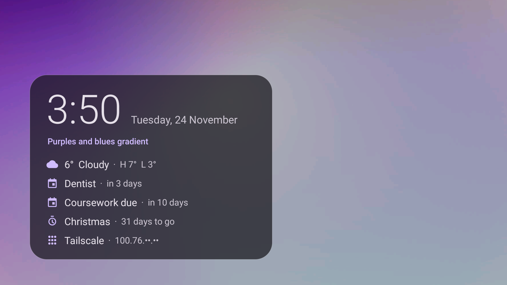
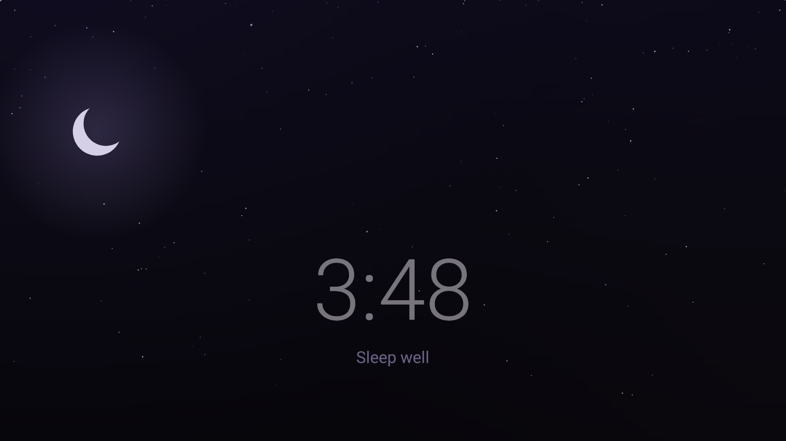
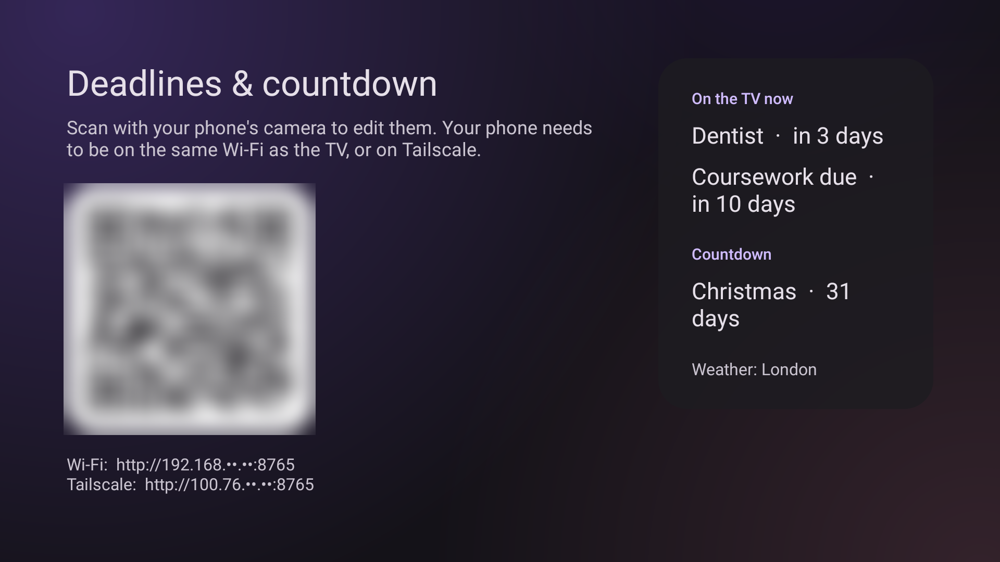

Uniform app tiles
Every app gets the same tonal card, coloured from its own icon. Focused tiles spring up with rounder corners and a purple ring. You can swap in your own tile artwork.
A calm, ad-free Material 3 home screen for Amazon Fire TV, with a beautiful screensaver, a sleep timer, and a setup wizard that can declutter your Fire TV and undo it all again.
About five minutes with just the remote. You only need the free Downloader app.
Type this code into Downloader's address box and press Go.
brick-bread.github.io/MaterialTV
This page opens in Downloader. Select Download APK to get the newest release. The direct APK link is …/releases/latest/download/m3home.apk (SHA-256).
On your Fire TV open Settings › My Fire TV › Developer options.
Don't see Developer options? Go to Settings › My Fire TV › About, select your device name seven times, then go back.
Search for Downloader (by AFTVnews) on the home screen or in the Amazon Appstore and install it. It's free.
Open Downloader, select the address box and enter the Downloader code above, or type brick-bread.github.io/MaterialTV. Press Go, then select Download APK.
Choose Install when Android asks, then Open. MaterialTV's setup wizard starts and shows a QR code. Scan it with your phone, or open the setup page on a computer, to finish setup from there. When Fire OS asks "Allow USB debugging?", tick Always allow and choose OK; you only do this once. Afterwards Downloader can delete the APK file to save space.
That's it. Pressing Home now takes you to MaterialTV, and holding Home opens its settings panel.
Everything is drawn in the Material 3 Expressive style: a dark theme, baseline purple accents and Google Sans Flex.
Every app gets the same tonal card, coloured from its own icon. Focused tiles spring up with rounder corners and a purple ring. You can swap in your own tile artwork.
Pin and reorder favourites, see recently used apps, and browse everything in a five-wide grid. Hide apps you never use.
Holding the Home button opens MaterialTV's own side-sheet settings instead of Amazon's quick menu, with shortcuts to the Fire TV settings you actually use.
Fall asleep to a show: a timer from 15 minutes to 2 hours ends with a gentle one-minute wind-down. At bedtime the screensaver turns into a calm night sky with a drifting moon and a dim clock.
Dim the picture and warm it up in the evening, with adjustable strength. Works on HDMI sticks that have no real brightness or night-light control.
A big expressive clock over drifting Material shapes, a pure shapes mode, or a slideshow of your own photos and silent live wallpapers (MP4) with slow pan and zoom.
Show on the home screen and screensaver:
Scan a QR code on the TV to open a small companion page served by the TV itself. Add deadlines, set the countdown and pick your weather town, without typing on a remote.
New versions come straight from GitHub Releases, checked against a SHA-256 checksum and installed only after you confirm.
Captured on a Fire TV Stick.







The first time you open MaterialTV, a built-in wizard sets up your Fire TV. Every step is optional, and everything it does can be reversed.
With ADB debugging on and one tap on Allow, the wizard can:
You pick which steps run. Run it again any time from Settings › Run setup.
The wizard records every change it makes, together with the value that was there before. Undo setup / uninstall in MaterialTV's settings uses that record to put things back:
Nothing is deleted from the system: Amazon apps are only switched off, never removed. Undo runs from the setup page, too.
MaterialTV is a launcher, not a service. It has no servers of its own.
There is nothing to sign up for. No analytics, no ads, no crash reporting, no telemetry. Your favourites and settings stay on the TV.
Weather: only the coordinates of the town you chose are sent to Open-Meteo. Updates: a daily check of this project's GitHub Releases. Companion page: served on your home network by the TV itself. Setup: SmartTube and Tailscale are downloaded from their official releases only if you pick them. Leave weather unset and there's nothing else to send.
The phone page runs on the TV only while the Deadlines screen is open, and every request must carry the secret key from the QR code. Nothing passes through an outside server.
The accessibility service only watches for the Amazon launcher and settings windows to catch the Home button; it reads no screen content. The now-playing listener reads media titles and ignores notifications.
Fire OS always shows its own launcher first and blocks other apps from coming to the front for about 3 seconds after Home is pressed. Every replacement launcher on Fire TV has this delay; MaterialTV takes over as soon as Fire OS allows.
Fire OS doesn't let you pick a different home app, and some permissions (taking over the Home button, setting the screensaver, disabling Amazon apps for the cleanup) can only be granted over ADB. Amazon blocks apps on the TV from using the TV's own ADB, so setup runs from your phone or computer via the setup page, after you allow it once on the TV.
When setup is finished you can turn ADB debugging off again; leave it on if you want to use the wizard or Undo later without re-enabling it.
Hold Home (or select Settings) and open Undo setup / uninstall. Choose what to reverse: the debloat and privacy changes, SmartTube, Tailscale, and, if you switch on Uninstall MaterialTV too, MaterialTV itself, which hands the Home button and screensaver back to Amazon. Keep ADB debugging on until Undo has finished.
You can also uninstall from Settings › Applications › Manage installed applications › MaterialTV, but use Undo first if you ran the cleanup, so the Amazon apps get switched back on.
Fire TV devices on Fire OS 7 or newer (Android 9+). It's tested on the Fire TV Stick 3rd generation (AFTSS). Other Fire OS 7 and 8 devices should work; please report anything odd on GitHub.
Devices running Vega OS (the newer Linux-based Fire TV OS) can't install Android apps, so MaterialTV won't run there.
The full source code is public under GPL-3.0, and each release publishes a SHA-256 checksum alongside the APK. Android only accepts updates signed with the same key as the version you installed.
Copy images or MP4 files to /sdcard/Android/data/app.m3home/files/screensaver/. Use the sub-folders abstract, nature, space and city to get a separate on/off switch for each theme.
MaterialTV builds on great open work.